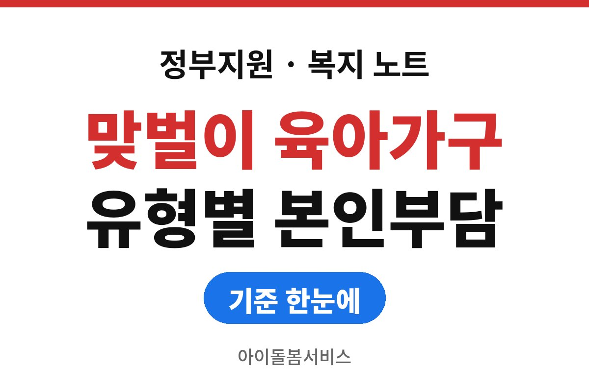
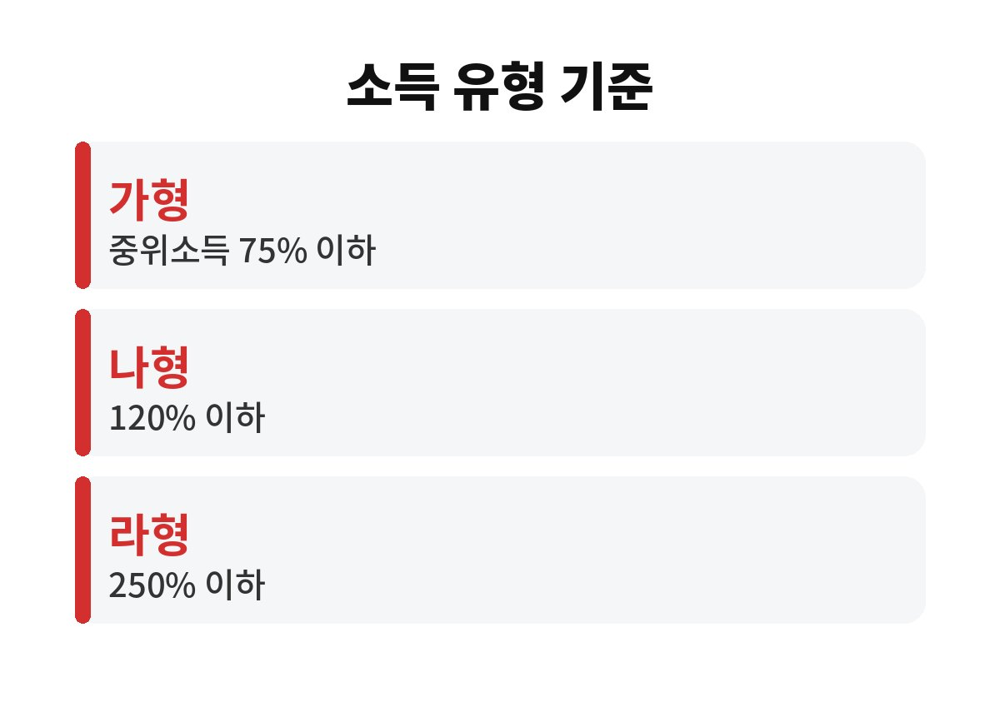
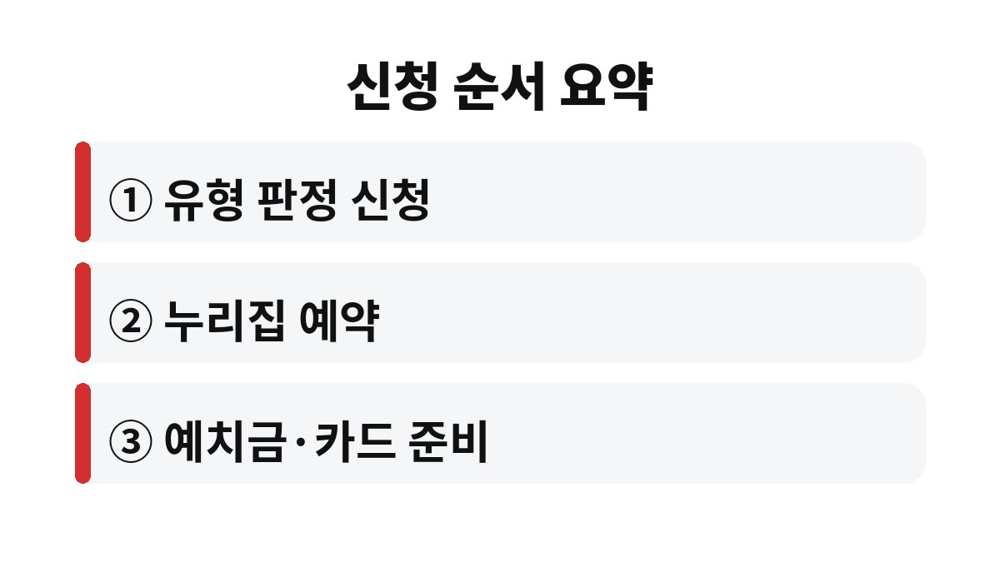

아이돌봄서비스 본인부담금은 소득 유형이 가형이면 시간당 1,918원에서 시작하고, 지원 구간에 들지 못한 마형은 요금 전액인 12,790원을 낸다.
기준은 취학 전 아이의 시간제 기본형이다.
같은 시간을 맡겨도 유형 판정을 받았는지에 따라 한 달 부담이 수십만 원씩 벌어지기 때문에, 예약보다 판정이 먼저다.
아래 금액은 2026년 기준으로 공개된 안내를 옮긴 것이고, 실제 적용 값은 아이돌봄서비스 누리집과 복지로 공고에서 다시 확인해야 한다.
대상은 부모가 일을 하거나 아파서 아이를 돌볼 수 없는 양육공백 가구의 12세 이하 자녀다.
시간제는 필요한 시간만큼 돌봄 선생님이 집으로 오는 방식이고, 영아종일제는 생후 3개월에서 36개월 이하 아이를 월 80시간에서 200시간 범위에서 맡기는 방식이다.
시간제에도 기본형과 종합형이 있는데, 종합형은 아이와 관련된 가사까지 포함해 시간당 요금이 더 높다.
2026년 시간당 요금은 시간제 기본형이 12,790원, 종합형이 16,620원이고, 영아종일제는 기본형과 같다는 안내가 있다.
종합형은 요금이 3,830원 더 비싼 만큼, 아이 밥과 정리까지 맡길 필요가 없다면 기본형으로 시작하는 쪽이 부담이 적다.
시간제 정부지원은 한 해 960시간까지다.
한부모, 조손, 장애 부모, 장애 아동, 청소년 부모 가정은 올해 120시간이 늘어 1,080시간까지 지원한다는 안내가 있다.
영아종일제는 연간 시간이 아니라 월 단위 시간으로 지원이 나뉜다.
취학 전과 취학 후를 가르는 선은 2019년 1월 1일 이후 출생 여부로 설명된 글이 많다. 이 날짜는 해마다 한 칸씩 밀리는지 공고에서 따로 확인해야 한다.
취학 후 아이는 같은 소득 유형이어도 지원 비율이 한 단계 낮고 본인부담은 더 높다. 표의 두 숫자를 나란히 놓고 본 이유다.
정부지원은 기준 중위소득 250% 이하 가구가 대상이고, 건강보험료를 기준으로 가형(75% 이하), 나형(120% 이하), 다형(150% 이하), 라형(250% 이하)으로 나뉜다.
250%를 넘으면 마형이 되어 지원 없이 전액을 낸다.
맞벌이 가구는 합산소득에서 25%를 덜어 낸 뒤 구간을 판정한다는 설명이 붙어 있다.
| 소득 유형 | 정부지원 비율(취학 전/후) | 시간당 본인부담(취학 전/후) |
|---|---|---|
| 가형 | 85% / 80% | 1,918원 / 2,558원 |
| 나형 | 60% / 50% | 5,116원 / 6,394원 |
| 다형 | 30% / 25% | 8,952원 / 9,592원 |
| 라형 | 15% / 10% | 10,870원 / 11,510원 |
| 마형 | 지원 없음 | 12,790원 / 12,790원 |

취학 후 아이를 월 60시간 맡긴다고 단순 곱셈을 해 보면 가형은 2,558원에 60시간을 곱한 153,480원이다.
같은 시간을 라형으로 맡기면 11,510원에 60시간을 곱한 690,600원이 된다.
시간은 같은데 5배 가까이 벌어진다.
가형 취학 전 아이를 같은 60시간 맡기면 1,918원에 60을 곱한 115,080원이다.
다형 취학 후는 9,592원에 60을 곱해 575,520원으로 계산된다.
이 계산에는 감경과 예치금 수수료가 들어 있지 않으므로 대략의 크기를 잡는 용도로만 쓴다.
공개된 안내에는 12세 이하 자녀가 둘 이상이면 본인부담 10%를 추가로 덜어 주고, 인구감소지역은 5%를 더 덜어 준다는 내용이 있다.
한부모나 조손 같은 일부 가형 가정은 이용요금 5%를 더 지원받는다고도 적혀 있다.
다만 이 비율은 해마다 행정예고로 바뀌기 때문에 신청하는 달의 공고 숫자를 따로 봐야 한다.
고지서가 오기 전에는 몇 시간을 썼는지 보는 것이 첫 점검이다. 월말에 시간이 남았는데 다음 달로 넘어가지 않는 구조라면 그 달에는 미리 쓰는 편이 낫다.

판정 없이 먼저 예약하면 소득과 상관없이 요금 전액을 내게 된다는 설명도 있어서, 순서를 바꾸면 손해가 생긴다.
복지로 온라인 신청은 부모가 모두 직장가입자인 맞벌이와 직장보험 한부모에게만 열려 있다는 안내가 있으니, 해당하지 않으면 주민센터 방문이 빠르다.
판정 결과 통지가 늦어 첫 이용일이 밀리는 일도 있어서, 돌봄이 급히 필요해지기 전에 미리 판정만 받아 두는 방법이 있다.
판정 유형은 건강보험료 기준이라 직장을 옮기거나 소득이 달라지면 다시 판정을 받아야 하는지 주민센터에 묻는다.
라형은 지원이 15%뿐이라 월 60시간만 써도 부담이 70만 원에 가깝다.
돌봄이 매일 길게 필요한 가구라면 시간제 대신 어린이집 연장, 영아종일제 같은 다른 제도와 월 총액을 나란히 놓고 계산해 보는 편이 낫다.
돌봄 선생님 연결에도 시간이 걸리는 지역이 있어, 예약했다고 바로 매칭이 되는 것은 아니다.
공개 안내만으로는 지역별 돌봄 선생님 수와 대기 기간을 알 수 없다.
실제로는 이용 희망 시간대가 평일 늦은 오후나 방학 중 낮 시간에 몰리는 가정이 많아, 한두 곳 센터에 미리 매칭 가능성을 물어 두는 것이 낫다.
먼저 할 일은 주민센터나 복지로에서 우리 집이 가에서 마 중 어느 유형인지 판정을 받는 것이다.
그 결과를 손에 들고 나서야 위 표의 숫자가 우리 집 숫자가 된다.
※ 2026년 11월 기준 공개된 정보를 정리한 글이며, 정확한 대상 요건·금액·신청 기간은 복지로·정부24·관할 주민센터의 공식 공고를 확인하길 바란다.